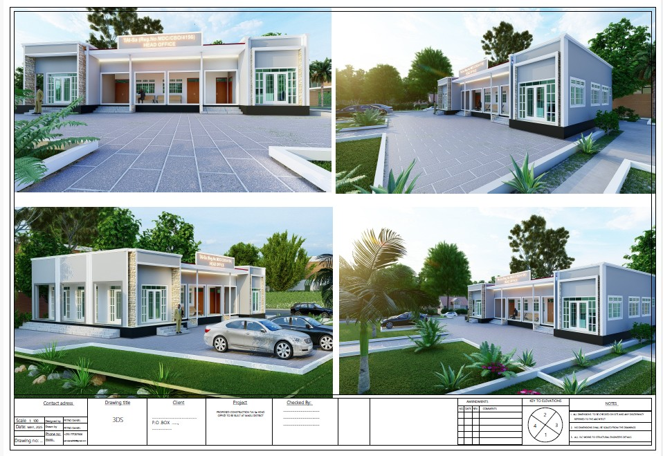

Our Projects
Bed Project for Isendelo Secondary School
Providing 20 beds for 40 female students preparing for national exams, ensuring a safe sleeping environment to boost academic success.
Science and Mancala Training
Training rural students in science and traditional Mancala games to foster critical thinking and cultural preservation.
Our long-term plan
Build and run a tuition-free TAI-Sa Science boarding school for financially disadvantaged students and young science frontiers in rural/village areas.
Gallery



Support Our Cause
Donate to provide beds or support science education. Contributions can be made as beds or funds.
Contact us for donation details: 0758376360 (Director), 0759310902 (Coordinator).
Contact Us
Reach out for more information or to arrange a visit.